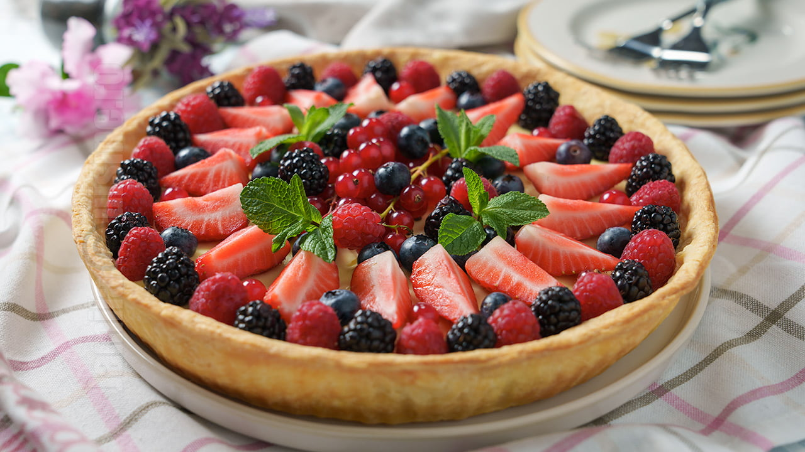

Tarta cu fructe de padure si crema de vanilie
Ingrediente
Pentru crusta
- 300 g de faina
- 150 g unt rece
- 70 ml apa rece
- 1 ou
- putina sare
Pentru crema:
- 700 ml lapte
- 120 g zahar
- 100 g unt
- 50 g amidon
- 3 galbenusuri
MOD DE PREPARARE
Incepem reteta de tarta cu fructe de padure si crema de vanilie cu pregatirea crustei. Pentru a avea o crusta super frageda aveti nevoie de unt gras, cu 80% grasime si care sa fie foarte rece. Nu folositi margarina, nici un unt cu mai putina grasime pentru ca rezultatul nu va fi acelasi. Incepeti prin a incorpora untul in faina cu ajutorul degetelor. Va trebui ca untul sa se raspandeasca prin faina in bucatele mici. Puteti apoi sa adaugati oul si apa rece si sa amestecati doar cat sa se formeze aluatul. Inainte de a-l pune la cuptor, trebuie sa se raceasca foarte bine in frigider. Eu l-am copt cu ajutorul cuptorului electric Electrolux Steamboost si am folosit functia acestuia cu abur. Rumeneste si coace uniform aluatul pentru a ramane fraged, gustos si cu o aroma minunata de unt.
Crema de vanilie pentru aceasta tarta cu fructe de padure este si foarte usor de preparat si de-a dreptul delicioasa. Se face repede si usor si o puteti personaliza foarte usor. Adaugati in ea ciocolata si veti obtine crema de ciocolata. Caramelizati zaharul si veti obtine crema de caramel. Combinatiile sunt infinite! Imi place sa pun crema calda in crusta pentru ca se inmoaie mai repede, dar nu excesiv. Ne dorim sa avem o crusta usor crocanta si care sa-si pastreze forma. Cand crema s-a racit putem pune fructele de padure si le aranjam asa cum dorim. Pe langa fructe mai puteti decora cu frisca sau chiar cu ganache. Puneti tarta la frigider pentru cel putin 12 ore inainte de a o servi si va fi perfecta! Incercati si reteta mea de savarina la tava pentru un alt desert care o sa va aduca aminte de copilarie!